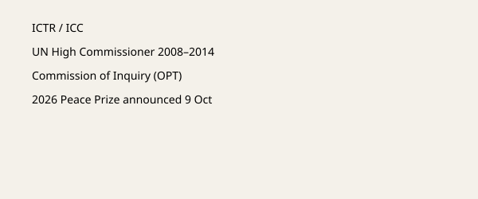

Oslo · Nobel Peace Prize · 10 October 2026
Navi Pillay received the 2026 Nobel Peace Prize

What is agreed across desks
On 9 October the Norwegian Nobel Committee awarded the 2026 Nobel Peace Prize to Navanethem “Navi” Pillay “for her efforts to promote peace and international law.” NobelPrize.org lists her as an 85-year-old South African jurist who defended anti-apartheid activists, served as a judge and president of the International Criminal Tribunal for Rwanda, as a judge of the International Criminal Court, as United Nations High Commissioner for Human Rights (2008–2014), and as chair of the UN Independent International Commission of Inquiry on the Occupied Palestinian Territory. She was in Nuremberg when notified. The prize sum is 12 million Swedish kronor. The ceremony is scheduled for 10 December in Oslo.
What is only a quote or interpretation
Committee chair Jørgen Watne Frydnes described international legal institutions as under pressure. Pillay’s reported remarks about dedicating the prize to survivors and a light-hearted comment about sharing it with Trump are her words. Coverage that emphasizes her role on the Gaza commission is accurate as to the fact of that role; whether that role was decisive in the award decision is an inference drawn by some outlets from the chair’s comments, not an explicit statement in the official citation.
Mechanism and history
The Nobel Peace Prize is awarded by a committee appointed by the Norwegian Storting under the terms of Alfred Nobel’s 1895 will. It has been given to individuals and organizations working on international law, human rights, and conflict resolution. Pillay’s ICTR jurisprudence on sexual violence as a potential act of genocide is a documented judicial contribution. The commission she chaired issued a report concluding that certain Israeli actions in Gaza met the legal definition of genocide; that finding was rejected by the Israeli government. Those are separate facts from the prize announcement itself.
What the story is not
It is not a ruling on the legal status of any ongoing conflict. It is not evidence that the prize will alter the behavior of states. The image is Oslo City Hall, the traditional venue of the ceremony, not a photograph of Pillay or of Nuremberg.

Source articles and scores
| Outlet | Headline | T | N | C |
|---|---|---|---|---|
| NobelPrize.org | Navanethem Pillay – Facts | 99 | 0 | 100 |
| Reuters | Former ICC judge Navi Pillay wins 2026 Nobel Peace Prize | 95 | 0 | 96 |
| BBC | Navi Pillay, former UN human rights chief, wins Nobel Peace Prize | 94 | 0 | 95 |